https://learning.edx.org/course/course-v1:HarvardX+FC1x+1T2020/
(HarvardX FC1xFat Chance: Probability from the Ground Up)
Sequence = permutation = order matters (1-2 \<> 2-1) (choosing president, vice-president, chair)
Collections = combinations = order does not matter (1-2 = 2-1) (choosing a committee)
Counting sequences (ordered) or permutations
How many numbers are in 1..10?
1..n = n
How many numbers are in 5..56?
Subtract 4 from every number to get 1..52 = 52
k..n = n -- (k -1) = n-k+1
How many numbers between 23 and 283 are divisible by 5?
25..280 (only include first and last number divisible within the range)
25/5..280/5 = 5..56 (divide first and last number by five)
5-4..56-4 = 52 numbers (subtract k-1)
5000 * 10 * 365 * 400
2,000,000000 * 7.3
Multiplication principle
With repitition
How many combos can you make out of 3 pairs of shoes 7 tops and 2 pants
3 * 7 * 2 = 42
If the choices are without removal powers can be used.
How many 5 letter combinations can be made out of the alphabet?
First letter = 26; second letter = 26 possibilities...
26^5^
w/o repetition (unique, permutations)
w/o repetition means that once an object is chosen it can't be chosen again (e.g. a ball is not returned to its urn)
How many ways are there when assigning president, vice president, secretary and treasurer for a class of 15 students (one person can have just one of the roles)
15 -> president
14 -> vice president
13 -> secretary
12 -> treasurer
15*14*13*12
Permut(15,4)
Fact(15)/Fact(11)
Number of sequences of k objects chosen without repetition from a collection of n objects:
The denominator removes the factors that we don't want e.g.:
1*2*...*15/1*2*..11 = 12*13*14*15
9 * 8 *7 = 504
Here the choices we make for the first two digits affect the number of choices we have at the third stage. But the problem can be worked out if we choose the last digit first:
3. digit = any of 1,3,5,7,9 = 5
2. digit = any of 1 to 9 -1 = 8
3. digit = any of 1 to 9 -2 = 7
= 5*8*7
Sequence must start with a boy and alternate between sexes:
-
8
-
7
-
7
...
-
1
-
1
Or 8! * 7!
Subtraction principle

e.g. # of consonants in alphabet = 26 -- # of vowels.
How many four letter words (with repetition) contain at least one vowel?
# four letter words = 26^4^
Count the number of 4 letter words that contain only consonants and subtract it from all four letter words.
= 21^4^
26^4^ -- 21^4^
# between 23..283 = 283 -- 22 = 261
# divisible by 5 between 23..283 = 25..280 /5 = 5..56 = 56-4 = 52
# between 23..283 and not divisible by 5 = 261-52 = 209
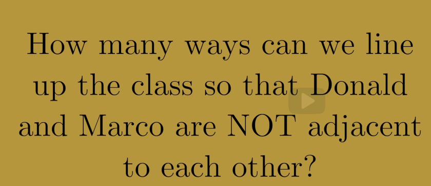
# of ways = 10!
Subtraction principle:
10! - # ways we can line up the class so that Donald and Marco ARE adjacent
# ways we can line up the class so that Donald and Marco ARE adjacent = #ways we can put them adjacent * 8!
# adjacent ways =
-
if one of them is either in front or back there is only 1 way to put them adjacent = 2
-
in any other of the 8 places there are two places where they can be adjacent = 8 * 2
10! -- (8! * 18)
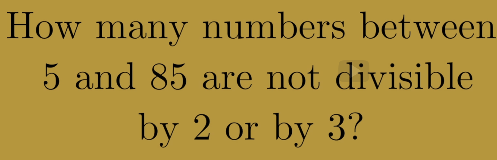
# between 5..85 = 81
# between 5..85 divisible by 2 = 6..84 = 84/2 = 3..42 = 40
# between 5..85 divisible by 3 = 6..84 = 84/3 = 2..28 = 27
# that are divisible by 2 and 3 = numbers divisible by 6 = 6..84 = 1..14
81 -- (40 + 27 - 14) = 28
Counting (order does not matter) collections or combinations
w/o repetition
The number of ways of choosing a collection of k objects without repetition from a set of n objects
The number of sequences (ordered) is given by: 15*14*13*12*11 or n!/(n-k)! or 15!/10!
N = total number of collections
For each collection of 5 students there are 5! Sequences to line them up.
The number of sequences can also be expressed as N * 5!
Therefore N * 5! = 15!/10!
for N:
Choose 5 from 15
Choose 3 from 6
Combin(6,3)
6!/(3!*3!)
The number of ways of choosing a collection of k objects without repetition from a set of n objects
Quotient of factorials = binomial coefficient
N choose K
10 choose 3 = 10 choose 7
10! / 7! * 3! = 10! / 3! * 7!
Because every time you choose k objects, and you take them away from the set n, the n minus k objects remain and give you a collection of n minus k objects. So every time you have a set of k objects, you also have a set of n minus k objects.
Divide into hands that contain ace of spades and don't
52 choose 5 = hands in poker game = 52! / (47! * 5!) = 52*51*50*49*48 / 1*2*3*4*5
51! / (46! * 5!) = 51*50*49*48*47 / 1*2*3*4*5
51! / (47! *4!) = 51*50*49*48 / 1*2*3*4~~*5 (~~47-52= 5)
Divide into hands that contain ace of spades and don't
Hands that don't contain ace of spades = 52-1 choose 5
Hands that do contain ace of spades = 52-1 choose 5-1
Meat = 7 choose 2 = 7!/5!*2! = 7*6/2 = 21
Veg. = 6 choose 2 = 6!/4!*2! = 6*5/2 = 15
Overall = 21*15 = 315
Overall options = 13 choose 4 = 715 (315 is a subset of that)
Multinomials
Let\'s say you\'re one of a group of 9 students, and you decided as a group that you want to live together in a dorm on campus. You\'re in luck. The dorm has available a double, a triple, and a quad. That is suites that hold 2, 3, and 4 students. So the 9 of you will just fit.
-
Way = 9 choose 4 * 5 choose 3 = 1260
-
Way = 9 choose 2 * 7 choose 3 = 1260
9!/(4!*3!*2!) = 1260
Both ways are equivalent and a formula can be generalized as:
Suppose we have a pool of n objects and we want to divide them up into k collections of sizes a1, a2, a3, and so on up to ak. Notice that for this to make sense, the numbers a1 through ak have to add up to n.
Simplified:
Multinomial coefficient
®®
Anagrams
Since there are duplicate letters the multiplication rule (7*6*...) doesn't work.
We want to divide up the pool of 7 slots into 4 collections:
-
one collection of 3 slots, which will get the E\'s
-
one collection of 2 slots, these get the S\'s
-
and two collections of 1 each that get the C and the H.
7!/(3!*2!*1!*1!) = 4*5*6*7/2 = 420
With repetition
The dining hall offers eight varieties of fruit, conveniently labelled A, B, and so on, up to H. You\'re feeling hungry so you\'ve decided to get five servings of fruit. Not necessarily five different fruits, but a total of five servings. And the question, of course, is the usual, how many different snacks could you choose?
The first rule is, each serving of fruit has to be on its own tray. (5 trays)
Second, there have to be empty or divider trays-one between the trays containing apples and the trays containing bananas. One between the trays containing bananas and the trays containing cantaloupes, and so. In other words, Calvin needs seven empty trays marked, for example, A to B, B to C, C to D, and so on. He needs these trays to be there, even if he\'s not getting any of the fruits in questions. (7 empty trays).
Answer: 12 choose 7
Probability
Flipping coins
All possible outcomes = 2^6^ = 64
Outcomes with 3H and 3T = 6 choose 3 = 20
Answer = 20/64 or 5/16
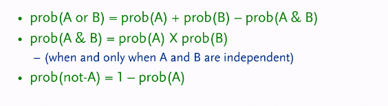
Rolling dice
When rolling two die there are 6^2^ = 36 possible outcomes (order does matter, 1-2 is different to 2-1)
There is only way that the sum if the die will be two therefore the probability of such an outcome is 1/36
There are 2 ways adding up to 3: 1-2, 1-1 with probability 2/36
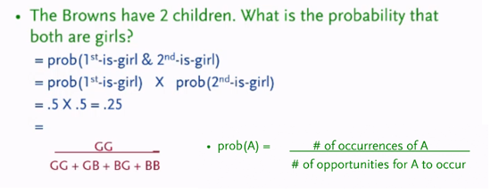
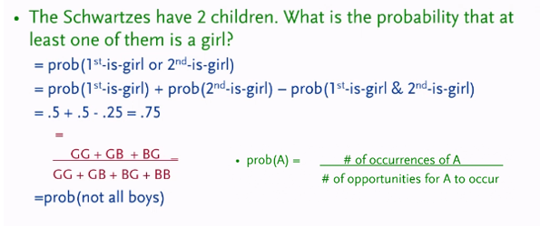
6^3^ = 216 = probability = 27/216
= all outcomes -- all that are between 1-5
= 6^3^ -- 5^3^ = 91

Number of places = 5 choose 2 = 10
Number of ways filing in the remaining places = 5^3^ = 125
Probability = 10*125/6^5^
Number of places to put two 1s= 5 choose 2 = 10
Number of ways filing in the remaining places
-
3 ways to put a 6
-
+ 4^2^
10*3*4^2^/6^5^
To calculate the probability of two or more independent events, we multiply the probabilities of the
individual events.
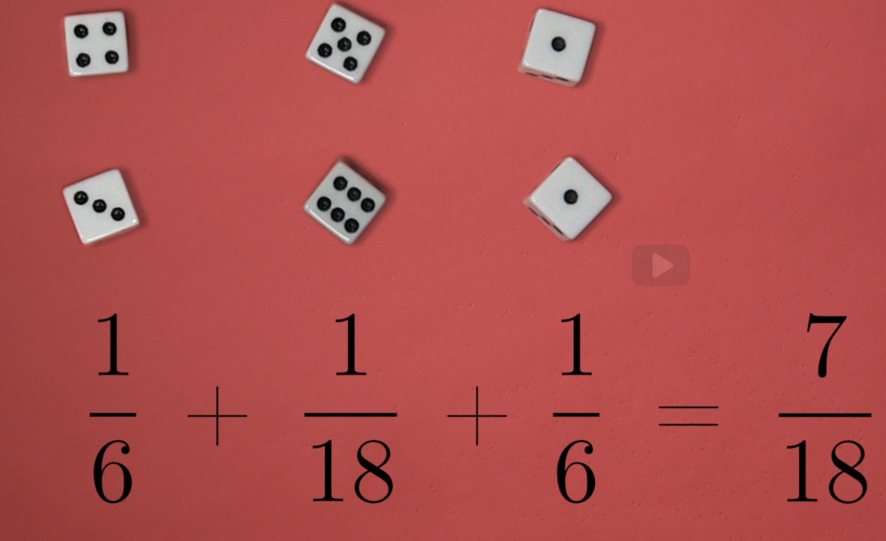
Poker
# of possible poker hands = 52 choose 5 = around 2.6 million
What is probability of a flush (all some suit)?
Choose 5 cards from one suit = # of possible flushes per suit = 13 choose 5
4 * 13 choose 5 / 52 choose 5 = about .2%
Conditional probabilities
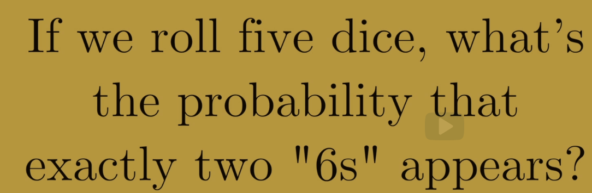
Bayes Theorem
-
Always remember multiplication in the context of probability, equals to AND.
Suppose we have some evidence that leads to a hypothesis. Five minutes pass and we then acquire new evidence that needs to be accounted for in our previous hypothesis. How do we update our hypothesis?
Let H denote our hypothesis and E denote our evidence. Bayes' Theorem is defined by
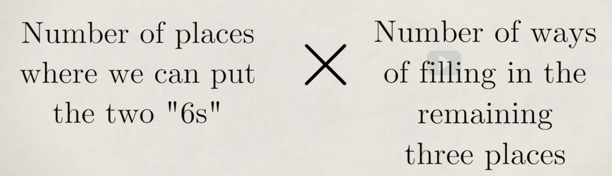
It's saying what is the probability that my hypothesis is true given the evidence we have. In order to answer these questions, we need three things:
-
the probability the hypothesis is true ℙ(H) also called prior if not known or random we can assume .5
-
the probability of the evidence given that the hypothesis is true ℙ(E|H) also called the likelihood
-
and the probability of the evidence ℙ(E)also called the normalizing constant
-
The result is called posterior
D is in this case for data same as E in the other formula
P(E) = P(H) * p(E|H)

P(breast cancer|test positive) = p(breast cancer) * p(test positive|breast cancer)/p(test positive)
= .01 * .9 / (.01 * .9 + .99 * .09)

P(cancer|test positive) = 8/(8+95)
http://www.greenteapress.com/thinkbayes/thinkbayes.pdf
https://mybinder.org/repo/rlabbe/ThinkBayes
Cookie problem
There are two bowls of cookies:
-
Bowl 1: 30 vanilla and 10 chocolate cookies
-
Bowl 2: 20 vanilla and 20 chocolate cookies
Now suppose you choose one of the bowls at random and, without looking, select a cookie at random. The cookie is vanilla.
p( bowl 1 | vanilla).
p( bowl 1 | vanilla) = p(bowl 1) * p(vanilla | bowl 1) / p(vanilla)
-
p(bowl 1) = random .5
-
p(vanilla | bowl 1) = 30 : 10 = 30/40 or ¾
-
p(vanilla) = 50 : 30 = 50/80 = 5/8
p( bowl 1 | vanilla) = .5 * ¾ / 5/8 = 3/5
p(E) can also be calculated as follows:
p(vanilla) = p(bowl 1) * p(vanilla | bowl 1) + p(bowl 2) * p(vanilla | bowl 2)
= .5 * ¾ + .5 * ½ = 5/8
M&M Problem
-
Mix 1994: 30% Brown, 20% Yellow, 20% Red, 10% Green, 10% Orange, 10% Tan.
-
Mix 1996: 24% Blue , 20% Green, 16% Orange, 14% Yellow, 13% Red, 13% Brown.
Suppose a friend of mine has two bags of M&M's, and he tells me that one is from 1994 and one from 1996. He won't tell me which is which, but he gives me one M&M from each bag. One is yellow and one is green. What is the probability that the yellow one came from the 1994 bag?
Now we construct a table with a row for each hypothesis and a column for each term in Bayes's theorem:
| Hypothesis | Prior p(Hypothesis) |
Likelihood p(Evidence | Hypothesis) |
Normalization constant (sum of column) Prior * Likelihood |
Posterior Previous column / normalization constant |
|---|---|---|---|---|
| A | ||||
| B |
Hypothesis:
-
Yellow = 1994 and Green = 1996
-
Green = 1994 and Yellow = 1996
-
Mix 1994: 30% Brown, 20% Yellow, 20% Red, 10% Green, 10% Orange, 10% Tan.
-
Mix 1996: 24% Blue , 20% Green, 16% Orange, 14% Yellow, 13% Red, 13% Brown.
| Hypothesis | Prior p(Bag x) |
Likelihood p(yellow | bag x) |
p(bag x) * p(yellow | bag x) | Posterior p(bag x | yellow) |
|---|---|---|---|---|
| Yellow = 1994 | .5 | 1994: yellow = .2 1996: green = .2 20 * 20 = 400 |
.5 *400 = 200 | 200/(200 + 70) |
| Green = 1994 | .5 | 1994: green = .1 1996: yellow = .14 10 * 14 = 140 |
.5 * 140 = 70 | 70/270 |
Monty hall problem
-
Monty shows you three closed doors and tells you that there is a prize behind each door: one prize is a car, the other two are less valuable prizes like peanut butter and fake finger nails. The prizes are arranged at random.
-
The object of the game is to guess which door has the car. If you guess right, you get to keep the car.
-
You pick a door, which we will call Door A. We'll call the other doors B and C.
-
Before opening the door you chose, Monty increases the suspense by opening either Door B or C, whichever does not have the car. (If the car is actually behind Door A, Monty can safely open B or C, so he chooses one at random.) . We'll assume he opens Door B.
-
Then Monty offers you the option to stick with your original choice or switch to the one remaining unopened door.
The question is, should you stick or switch or does it make no difference?
Better switch
p(E) = Door B opened (and there is no car behind B)
p(car is behind Door A or C | Monty opened Door B)
| Car is behind door x | Prior p(car behind door x) |
Likelihood p(Door B opened | car behind door x) |
Prior * Likelihood | Prior / (sum previous column) |
|---|---|---|---|---|
| A | 1/3 | 1/2 | 1/6 | 1/6 / .5 = 1/3 |
| B | 1/3 | 0 | 0 | 0 |
| C | 1/3 | 1 | 2/6 | 2/6 / .5 = 2/3 |
- Likelihood: If the car is actually behind A, Monty could safely open Doors B or C. So the probability that he chooses B is 1/2. And since the car is actually behind A, the probability that the car is not behind B is 1.
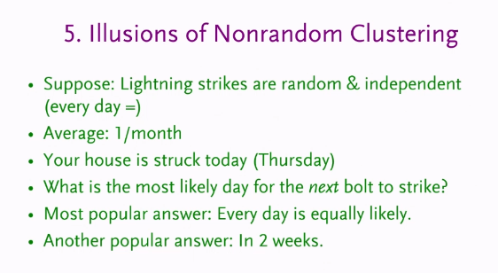
Choose 1 = 1/3 chance of winning
Remaining chance = 2/3
Of that 2/3 chance one door will be eliminated therefore it's better to switch
Odds
To convert from a probability to odds, divide the probability by one minus that probability. So if the probability is 10% or 0.10 , then the odds are 0.1/0.9 or \'1 to 9\' or 0.111. To convert from odds to a probability, divide the odds by one plus the odds.
Odds to probability
1:4 = 1/(4+1) : 4/(4+1) = 20%:80%
Probability to odds
20%:80% = 1: .8/.2 = 1:4
Odds form of Bayes:
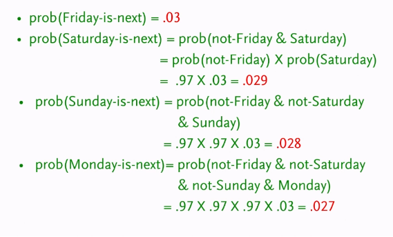
Cookie Problem using odds
There are two bowls of cookies:
-
Bowl 1: 30 vanilla and 10 chocolate cookies
-
Bowl 2: 20 vanilla and 20 chocolate cookies
Now suppose you choose one of the bowls at random and, without looking, select a cookie at random. The cookie is vanilla.
-
The prior probability p(bowl 1) is 50%, so the prior odds are 1 : 1, or just 1.
-
The likelihoods for vanilla in each bowl are:
-
Bowl1 30 : 10 = 30/40 or ¾
-
Bowl2 : 20: 20= 20/40 or ½
-
-
Likelihood ratio = ¾ / ½ = 3/2
-
Posterior odds = 3 : 2 = 3/5 in probability (60%)
Pigeon hole principle
The pigeonhole principle states that If n + 1 objects are placed into n boxes, then some box contains at least 2 objects. For example, if there are 5 people living in your house, but you only have 4 bedrooms, then at least 2 people must share a bedroom.
The Irish Hair puzzle is a well-known illustration of the pigeonhole principle. The population of Ireland is approximately 4.6 million however, the average number of hairs on the human head is only 150,000. By the pigeonhole principle, there must be at least two people in Ireland with the same number of hairs on their head. In other words, even if there were 150,000 people, each with a different number of hairs on their head, the rest of the population must fit into one of the categories between 0 and 150,000 hairs.
Birthday paradox
What is the chance in a room with 23 people that two people share a birthday?
# of pairs that can be build = 23*22/2 = 253
23!/(21! * 2!)
chance for two people having the same birthday = 1/365
chance for two people not having the same birthday = 1- 1/365 = 364/365
in 364 out of 365 scenarios there won't be a match.
Chance of 253 unique pairs = (364/365)\^253
| Number of pairs | 253 = (23 * 22)/2 |
|---|---|
| Chance of a unique pair | 99.7260% = 364/365 |
| Chance of 253 unique pairs | 49.95% = (99.7260%)\^253 |
| Chance of some match | 50.05% = 1 - 49.95% |
Can also be calculated as = 1- Permut(365,23)/(365 \^ 23)
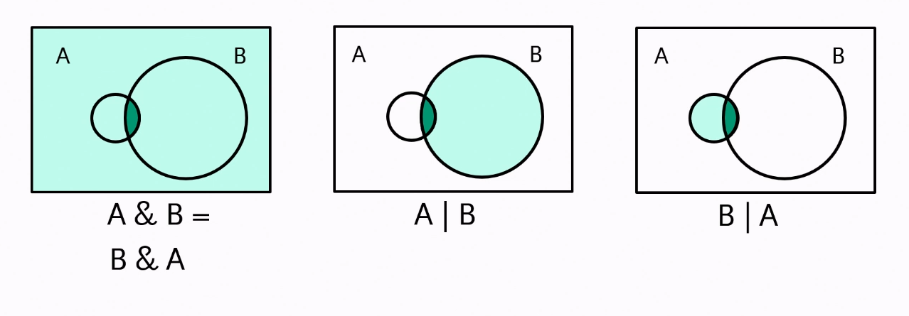
Problem 6. There are n people present in a room. Prove that among them there are two people who have the same number of people they know in the room.
Solution. Each person may have between 0 and n − 1 acquaintances (inclusive). We imagine labelling each person with the number of acquaintances that person has. We have n people, and n possible values for the labels. We would like to show that some two people have the same label value. If there were more people than label values, we would be finished. But since there is the same number of label values as people, we appear to be stuck. However, observe that the only way that no two people have the same label value is that everyone has a different label. Thus one person knows nobody, one person knows 1 person, and so on, and finally one person knows n − 1 people. But this last person then knows everyone else, and in particular this means that there cannot be a person who knows nobody. This contradiction shows that there must indeed be two people who have the same number of acquaintances in the room.
7. If you pick five cards from a standard deck of 52 cards, then at least two will be of the same suit.
Each of the five cards can belong to one of four suits. By the pigeonhole principle, two or more must belong to the same suit.
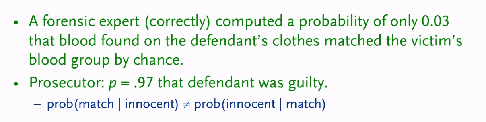
There is another version of the pigeonhole principle that comes in handy. This version is "the maximum value is at least the average value, for any non-empty finite bag of real numbers" (thanks Professor Dijkstra)
Do not let the math jargon intimidate you. The idea is intuitive. For typical data sets, the average is the "middle" value, so clearly the maximum should be at least as big. While this version sounds different, it is mathematically the same as the one stated with pigeons and pigeonholes.
Consider again the problem of stuffing pigeons into pigeonholes and consider the average. If we have more than n pigeons and n pigeonholes, then the average value of (pigeons / pigeonholes) is greater than one. This means the maximum value should also be larger than one. In other words, there has to be some value of more than one pigeons per pigeonhole. Indeed, the two versions are about the same idea.